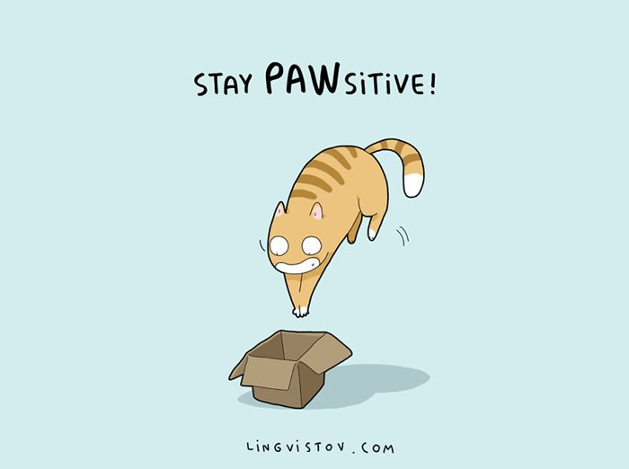
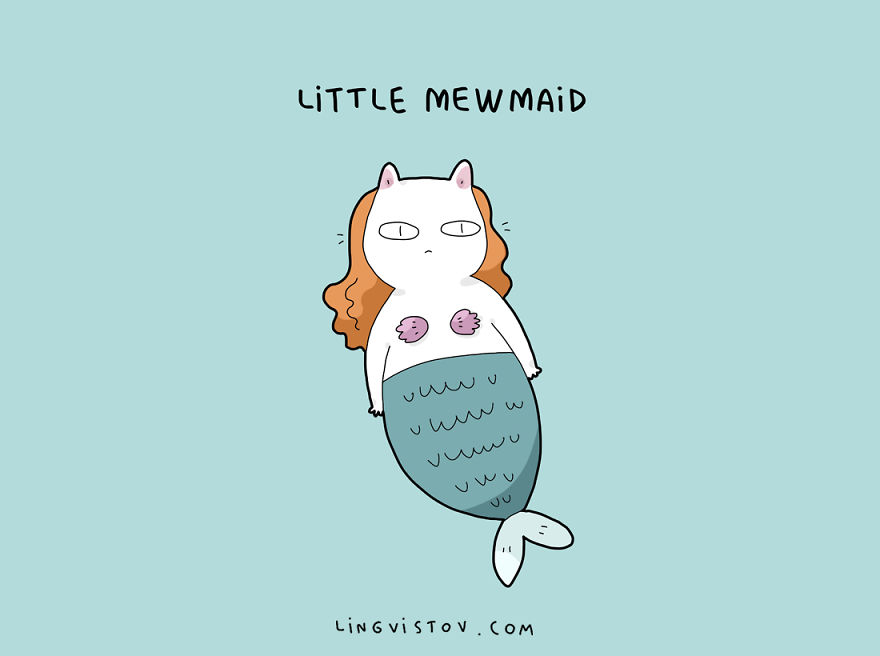
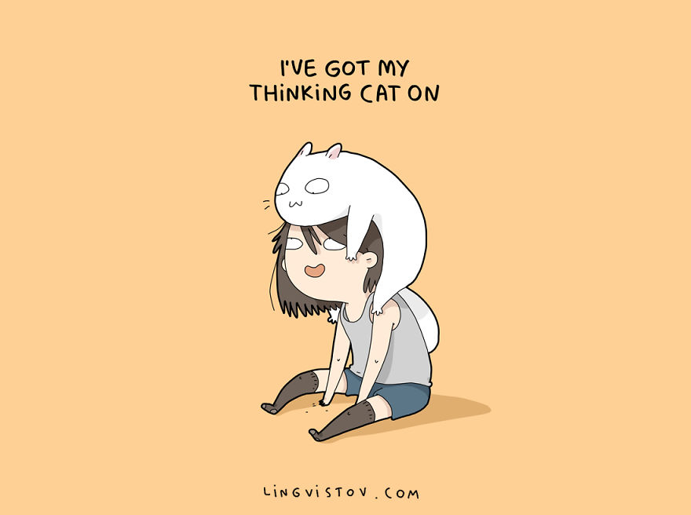
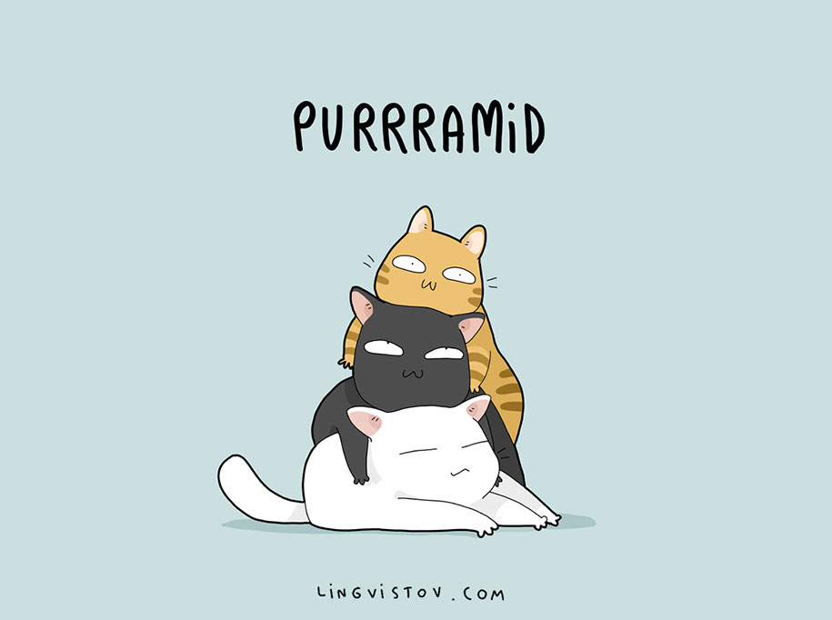
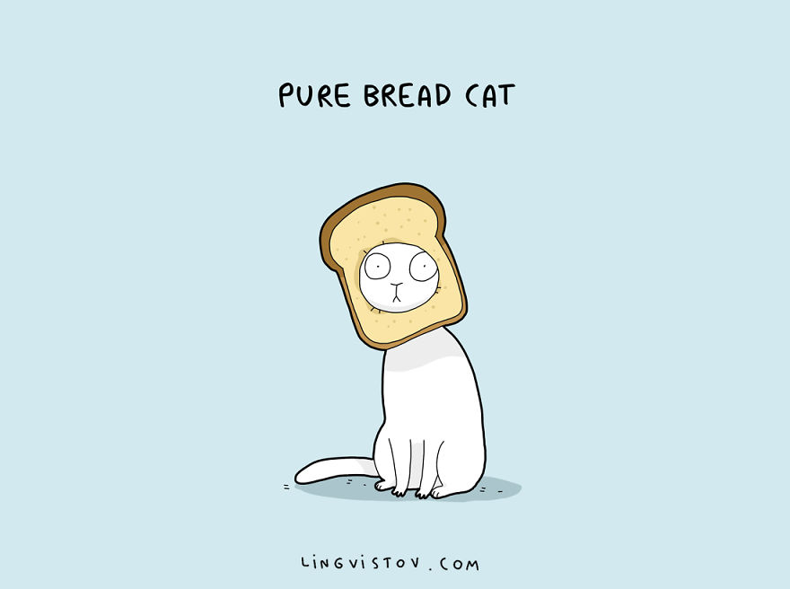
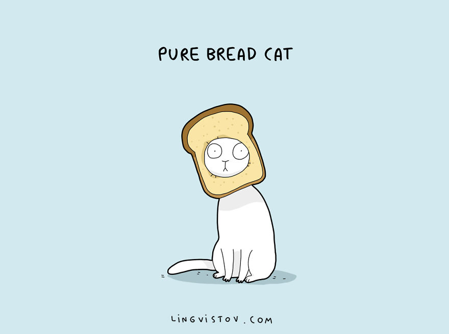
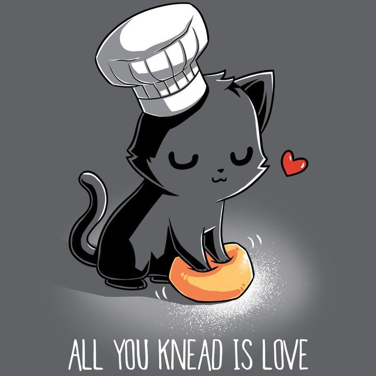

Cat-titude is not just “attitude” with “cat” spliced in. No, no. It is a whole separate idea. Someone with cat-titude might try to act unimpressed with your attempts to pamper them. They may swat at you whenever you try to hand them things, scratch the door whenever they want to go outside, or suddenly sit on your laptop while you’re using it, without explanation.
  Paw-sitiveGoing back to my newspaper story, in the end, the other editors and I settled on this pun. Paw-sitive is just cat-related enough to be funny but just subtle enough to be professional. It’s paw-sitively the best cat pun out there.
  Purr-suasionWhy do we still use the phrase “puppy dog eyes” when “kitten eyes” are much more persuasive? Kittens have a certain innocence about them that make them incredibly convincing. One look and I will give them anything they want. They have the power of “purr-suasion.”
 
Meow-nificent

Meow-nificent
Humor me here: imagine Maleficent (2014), the fairy tale retelling of Sleeping Beauty, with cats. Angelina Jolie, with her unusually pointy cheekbones, would become a Siamese cat and Aurora, with her natural curiosity and inexhaustible sleepiness, would be. . .well, she could probably stay because that sounds pretty cat-like already.  Claw-some
Aside from the fact that it sounds a little violent, “claw-some” is a pretty cat-astic replacement for “awesome,” which is overused in our society anyway. What better way to spice up our vocabulary than by adding more cat themes?